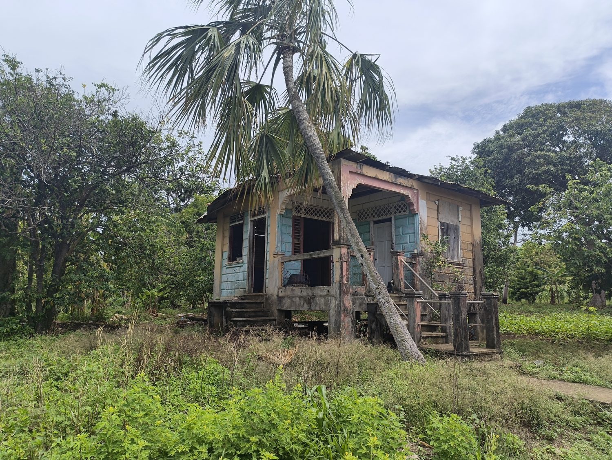
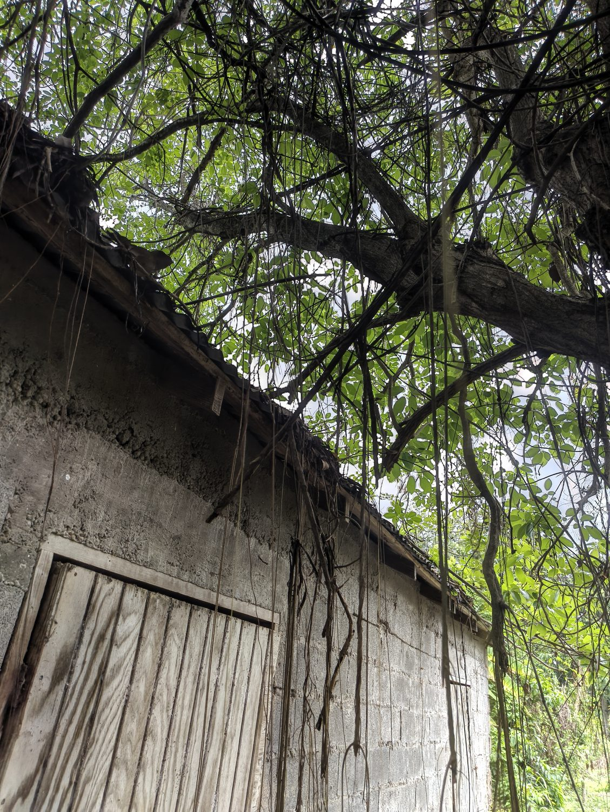
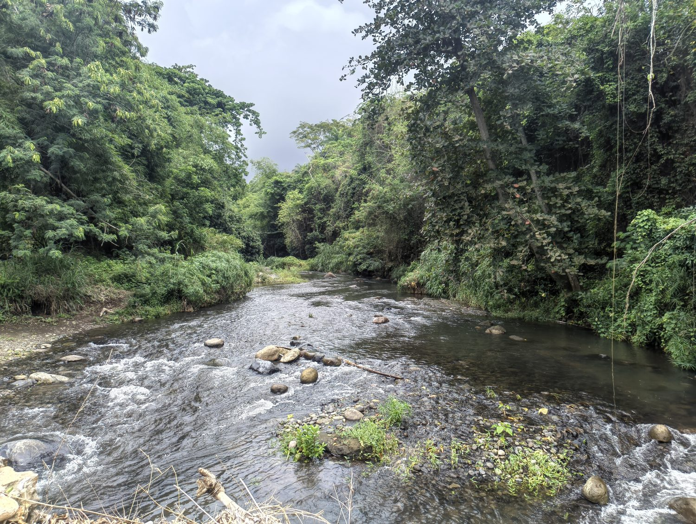

First dispatch incoming
The warehouse keys turned up. The barn opens on camera — the clip lands right here.
TheLand — a film, and a place being returned to life
Seven acres of ancestral family land on Grenada's east coast — a Taíno settlement, a Georgian mill, a river, and the fields where the village once played cricket — coming back to life as a heritage retreat and cultural gathering ground.
Simon · St Andrew · Grenada — 12.13°N 61.62°W · 7 acres, family-owned
Not a resort. A heritage retreat and cultural gathering place — built in disciplined phases, hiring locally, and stewarded for the family and the community that surround it.
01 — The story
Rob's parents left Grenada in the 1960s, raised their family in London, came back to build a house in the 1990s, and returned to England again. The land waited. Now the youngest of that family has come home to it — to bring it back into use without selling what makes it matter.
The name says the intent. Yukayeke is the Taíno word for a settlement — a place people belong to. The site carries its own layers: a Georgian sugar-mill ruin, Amerindian remnants, a river along one boundary, and the fields across the road where, someone recalled only recently, the village used to play cricket. The ground was already a place people came to gather. This is not a concept being imported. It is a memory being kept.
02 — The vision
The heart of it is a communal event tent and a kitchen: dinners that spill into jazz, dance, house music, carnival arts, poetry. You sell a night out on the land, with somewhere to fall asleep — restaurant-and-rooms, built around an event, fed from the land's own kitchen.
It flexes between four modes, kept apart by the calendar rather than blurred together:
Chic retreat
A couple or small group. Quiet, premium, no public event.
Family & reunion
A whole-site buyout; the tent for their own gathering.
Event night
Ticketed dinner-and-music, open out, rooms sold around it.
Festival host
A poetry or arts weekend; the whole land programmed.
The way in is a supper-club, not a restaurant: a handful of ticketed nights that prove the audience before a cent of arts capital is spent. If they fill rooms, the kitchen has earned the stage — and one day, perhaps, a recording studio in the barn.
03 — The place & its moment
St Andrew is not the tourist strip, and that is the opportunity: authentic, uncrowded, and newly surrounded by national investment. The retreat opens into a moment, not a vacuum.
On the land
3-bed house & verandah · warehouse/barn · Georgian mill ruins · Amerindian remnants · river boundary · the cricket fields.
Within reach
The FIFA-funded GFA Technical Centre · the planned Seamoon National Cultural Centre · Progress Park redevelopment · the GIDC industrial park.
The timing
Grenada's Diaspora Homecoming 2026 lands squarely on this project's opening window, and on Rob's standing as a returning national.
The incentives
GIDC duty & VAT concessions on imported build equipment under a single master project approval, drawn down phase by phase.
04 — The plan
Nothing is over-committed. The land is already owned; the build advances in gated phases, each opening with a single concession-backed delivery. Guest units are demountable tents — struck and stored through hurricane season, which is also the low season — so a bad storm means a take-down, not a write-off.
Licensed as a guesthouse plus cottages — eight letting rooms, deliberately below the ten-room hotel threshold.
05 — The numbers, honestly
£69k
to open · yr 1
£276k
full build · 5 phases
~21%
yr-5 net margin
Yr 3
net-positive from
The opening phase asks ~£69k (EC$246k) to make the house lettable; the full, five-phase build commits ~£276k (EC$980k) — but reached in gated steps, never in one leap, and the family's real number is smaller once Returning-Nationals and GIDC reliefs are counted.
Conservative case: by year five, roughly £41k net at a ~21% margin; a realistic upside reaches ~£74k. The events and food line — not the rooms — drives every gain. This is a capital-backed project, with the family-owned land as the standing offset, and the arts ambitions escalate only on proof: no spend runs ahead of the demand that justifies it.
06 — The film
A diaspora homecoming
First cut · final polish in progress
A six-part web series follows the reactivation of the land — homecoming, heritage and the honest work of the build. The feasibility journey is the plot; each episode is a chapter of this prospectus.
Crossing
The return to the land.
Layers
Mill, river, cricket fields.
The People
Move at the speed of trust.
The Plan
Small is all.
First Light
The first night that works.
The Gathering
The land, doing what it always did.
From the land — dispatches
Short, unpolished clips from the ground as the land comes back to life — shot on a phone, the moment it happens. This part isn't the pitch; it's the doing. You're not an audience here. You're family, and you're in it.
“The land was always a gathering place.”




And the moving picture —
First dispatch incoming
The warehouse keys turned up. The barn opens on camera — the clip lands right here.
Unlisted · for family & friends · newest first
The numbers — to play with
A conservative, planning-grade model — a companion to the workbook, not a promise. Drag the sliders; nothing here can break. Shown in the two currencies that matter to us.
The building
Heavy, slow, asset-backed. The rooms are a platform — surplus builds as you scale.
The arts & crafts engine
Light, fast, demand-gated. Near-zero capital to start — the early income while the building matures.
Memo: event nights also pull room bookings — a second payoff not counted here.
Total surplus / year (building + programming)
Years to repay the opening capital
Rooms carry maintenance (9% of revenue), supplies & F&B (18%) and marketing (13% of room income); running costs are the slider you set. The island median occupancy is ~48% — the defaults sit below it on purpose. £ and EC$ only (EC$ pegged at 2.70 to the US dollar). Firm the local-build lines with a Grenada quantity surveyor before committing capital.
07 — The ask
Family
Steward the phased capital. Honest, conservative returns; the land returned to use and kept in the family's hands — outcomes measured in bookings and stewardship, not optimism.
Partners & diaspora
A GIDC concession partnership with measurable local impact — ~80% local hire, profit-sharing, a Cultural Advisory Council with real say — aligned to Grenada's cultural, sporting and diaspora-homecoming initiatives.
Series funders
Back or commission TheLand: a ready diaspora-return story with a built-in production timeline — the build supplies the plot — and an audience that becomes the retreat's first guests.
Stewardship — the non-negotiables
Trust the people
Community integration over parallel systems. Relationships before infrastructure.
Local by default
~80% local hiring and profit-sharing as commitments, not aspirations.
Light on the land
Solar-first, no air-conditioning, passive cooling, demountable structures.
Heritage kept
Mill, river and Amerindian remnants honoured with the Museum and Preservation Trust.
Come and see the land.
The full prospectus, the financial model and the first cut are available on request. The most honest version of this is in person, on the ground in Simon.